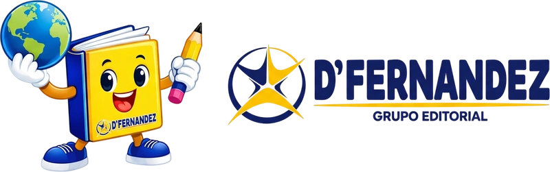

Todo empieza
con tu institución.
Cuéntanos qué textos necesitas, para qué grados y cuántos ejemplares. Te orientamos para definir tu pedido.

Textos escolares personalizados con el logo de tu institución y contenidos adaptados a tu currícula.
Cotizar para mi instituciónVenta exclusiva para instituciones educativas.No realizamos venta individual de ejemplares.
Tu logo. Tu currícula.
Nuestra pasión por imprimirlo bien.
Portadas, interiores y acabados.
Nuestros trabajos, en movimiento.
Una buena impresión
habla por sí sola.
Cada institución es distinta.
El acabado también puede serlo.
Impresión láser con textos nítidos y gráficos definidos. Encuadernación a la medida del uso en el aula.
Un lomo continuo y páginas bien sujetas: una presentación limpia, pensada para durar.
Cotizar con este acabadoDesde una página en blanco y negro hasta una edición a todo color. Cuidamos la impresión y la unión de cada texto para acompañar el ritmo de las clases.
Impresión láser · Blanco y negro · ColorSomos Editorial D’Fernandez. Desde Ayacucho, elaboramos textos escolares para instituciones que buscan una presentación a la altura de sus contenidos.
Cuéntanos qué textos necesitas, para qué grados y cuántos ejemplares. Te orientamos para definir tu pedido.
Personalizamos portadas e interiores con el logo y la identidad de tu institución. Adecuamos nuestra propuesta de contenidos y materiales educativos a tu currícula.
Coordinamos los detalles de producción y entrega según tu proyecto. Atención directa, desde el primer mensaje.
Cuéntanos qué necesita tu institución.
Preparemos juntos una propuesta a medida.
Venta exclusiva para instituciones educativas.No realizamos venta individual de ejemplares.
916 227 046Asoc. Los Artesanos, Mz. C, lote 01
Ayacucho, Perú